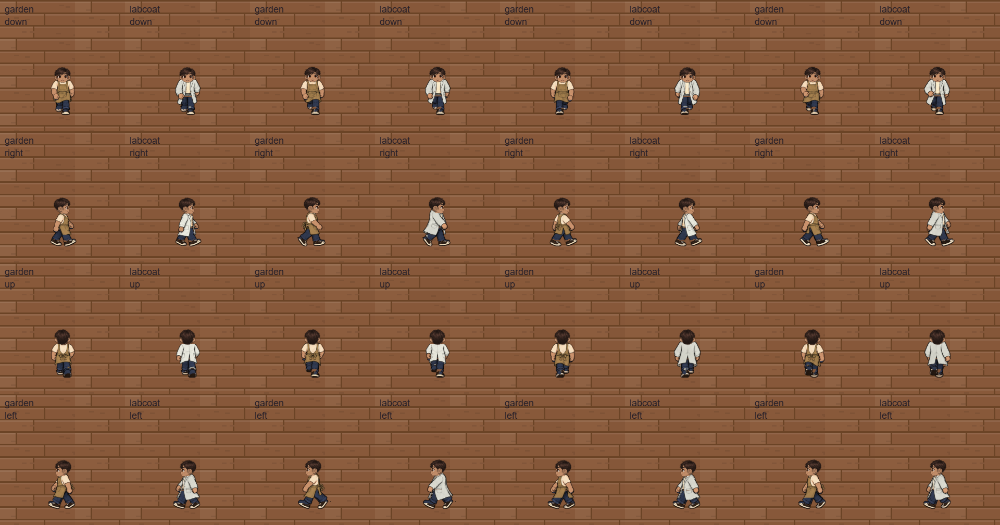

Full wardrobe walking · Phase 2
All 15 tops, five bottoms and four shoes now have authored walk layers. These previews use the actual game drawing function and full game canvas resolution, with the existing smooth illustrated rendering. Rows are front, right, back and left; each animation has four poses.
Visual review and your phone playtest are still needed. Automatic registration and browser checks cannot judge the quality of movement, cloth folds or occlusion.
Animated GIF · Notes and validation limits · 300-outfit browser report · New garment registration · Source preservation
Coat and apron: every pose
Alternating apron and lab coat columns, four successive frames, all four directions.

This is a local review. It loads no game save. Phase 2 has not been pushed or deployed.